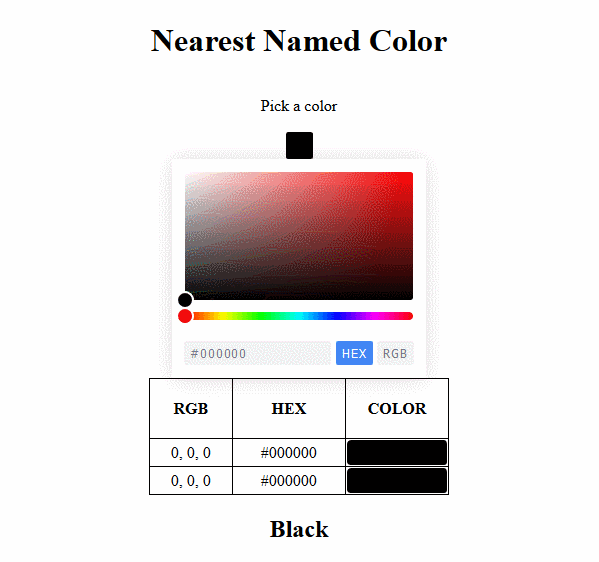
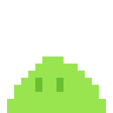

At the Army Research Lab, I've architected software controlling an aerosol deposition machine, capable of depositing layers of powder microns thick. The goal of this research is to be able to print electrical traces in 3D with higher conductivity and strength than ink-based solutions.
I started learning LabVIEW shortly after beginning work at ARL in 2018. About a year later, I achieved the Certified LabVIEW Developer certificate from National Instruments and had become the sole developer on a large application meant to control the aerosol depoisiton machine and all the physical components associated with it.
I implemented the Actor Framework model to coordinate systems, consolidating them from their previous individual apps. This involved writing design documents, creating a loosely-coupled messaging architechture, and scripting in Python and MATLAB to collect, transform, and visualize data.
Building this website has been a great practical exploration of HTML, CSS, and JavaScript. I had a basic understanding of them already, but there's no better form of practice than actually making something. I've had to deal with build systems, hosting, git, and various other problems and solutions that have popped up along the way. Building it from scratch, while perhaps more complicated than using a CMS, has given me a greater appreciation of what's going on behind the scenes.
I set up a build system using Gulp that allows me to have a live development server of the site. It also, and this is the reason I set it up, can inject HTML into static pages before deployment. This is very helpful, as it lets me section the header, footer, and so on into individual files and reuse code instead of rewriting it. It's always helpful for me to have an actual problem to solve when I'm trying to learn, and this has been great for teaching me more about Node.js.
The following block of code is a part that I had trouble with initially, and also the part that I solved on my own, instead of getting a package to do it for me. I had a function that would take source files, process them, and copy them to the distribution directory. But when I didn't need a certain file anymore and deleted it from source, my script had no way of knowing to remove it from distribution as well. Creating this process to clean the distribution directory of unneeded files helped me learn more about globbing and working with the filesystem in Node.js, as well as learning when it's time to stop searching npm and to just do it myself.
let source = "./src";
let distrib = "./EmilyBonar.github.io/"
function readSrcFiles() {
srcFileList = glob.sync("**/*", {
cwd: source,
});
return Promise.resolve("cleaned");
}
function readDistFiles() {
distFileList = glob.sync("**/*", {
cwd: distrib,
});
return Promise.resolve("cleaned");
}
function parseFiles() {
distFileList.forEach((el) => {
if (!srcFileList.includes(el)) {
console.log(del.sync([distrib + el]));
}
});
return Promise.resolve("cleaned");
}I was curious about the named colors in HTML and how to find which one was the closest to any input if you wanted to specifically use named colors for a design. I couldn't find anything that would answer that question to my satisfaction, so I made Nearest Named Color. This tool lets uses JavaScript to let you pick a color and tells you the nearest named color in RGB space.
Making this was a helpful first step in learning layout, how HTML and CSS deal with color, and using Javascript to affect the content of web pages. In order to find the nearest color, I used the following code. I employed a simple Euclidian distance formula, calculating the color distance for all of the 140 named colors in comparison to the one color selected. There is probably a more elegant or efficient way of calculating this, but it works for this application.
function nearestColor(RGB) {
let regex = /[0-9]+/g;
let RGBarray =
Array.from(regex[Symbol.matchAll](RGB),
(x) => x[0]);
function distance(RGB1, RGB2) {
return (
(RGB2[0] - RGB1[0]) ** 2 +
(RGB2[1] - RGB1[1]) ** 2 +
(RGB2[2] - RGB1[2]) ** 2
);
}
let closestColor;
let dist = 195075;
for (color in colors) {
newdist = distance(RGBarray,
colors[color][1]);
if (newdist < dist) {
dist = newdist;
closestColor = color;
}
}
return closestColor;
}I've made several very small indie games in the past, usually as coding exercises to get used to a new language or framework. I made a small rougelike dungeon crawing game called Eevee's Birthday for the PICO-8 virtual console, during which I learned a lot about designing sprites, composing (very simple) music, and most importantly, coding in Lua.
I also made a small jumping toy called Slimes in Lua, but this time with the LÖVE game engine. It's even simpler than the previous game, but was a good way to practice using real tools to build and version control a project. Plus I got to make a little animation of a slime bouncing around, and that's fun.
